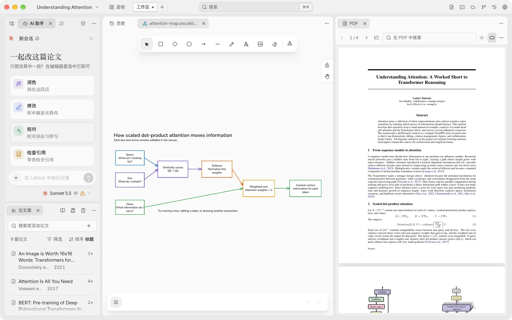

AI 助手
AI 助手面板运行一个编程智能体：它能读你的项目和论文、修复编译错误、修改文件。它做的每处修改都以差异显示，可以审阅或撤回，并记入 历史。Lattice 本身不附带模型或 AI 订阅，需要你自己提供。
接入助手
打开 AI 助手 面板（⌘⌥3，或左侧的机器人图标），然后选择一种方式：
- Mac 上以你的身份登录的 Claude Code 或 Codex。安装命令行工具，在「终端」里登录一次（例如
claude auth login），再在输入框下方的模型菜单中选中它。 - 你安装的 其他智能体命令行工具，例如 Cursor、OpenCode 或 Droid。
- 你自己的 API：设置 › AI 助手 › 模型接口 填入兼容 OpenAI 或 Anthropic 的地址、密钥（保存在钥匙串中）和模型名，无需安装其他东西。
设置 › AI 助手 › 模型 设置默认的服务商，以及 Lattice 自己做小任务（校对、提交说明、修复编译）时用的模型。MCP 可以给助手添加 Zotero 等工具；用量与限制 显示用了多少。
使用

- 在输入框写下你的要求，按回车。提到某个文件，它就会去看那个文件。
- 润色、修改、校对 和 检查引用 用来启动常见任务。只想改其中一段时，先在编辑器里选中它。
- 在编辑器里选中文字后，可以直接 校对（
⌘⌥P）、润色 或 改写，每处修改都附带理由。 - 批注 一段文字（选中，选择 批注，写下要怎么改），再点 保存并立即修改：助手为每条批注提出修改，你在原处接受或拒绝。命令面板里的 根据批注修改 会分轮处理所有未完成的批注。
- 编译失败时，问题上的 交给助手 会把它直接发到这里。
会话按项目保存；会话名旁边的时钟图标列出之前的会话。